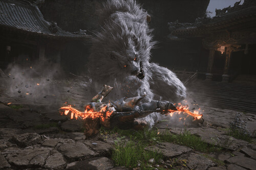

Historia
Black Myth: Wukong es un videojuego de acción desarrollado por el estudio chino Game Science, basado en la novela clásica Viaje al Oeste. Su desarrollo llamó la atención en 2020 cuando el estudio publicó un tráiler que se volvió viral, acumulando millones de visitas en plataformas como YouTube y Bilibili en un solo día. En ese momento, Game Science era un equipo pequeño de aproximadamente 30 personas.El tráiler tenía como objetivo atraer talento al proyecto, y la respuesta fue masiva, con más de diez mil postulantes interesados en unirse. Sin embargo, el estudio optó por un crecimiento controlado, contratando solo entre cinco y quince personas para mantener su visión original. Inicialmente, el juego se desarrollaba con Unreal Engine 4, pero en 2021 se decidió migrar a Unreal Engine 5 para aprovechar sus capacidades avanzadas y lograr un estilo visual más realista.
Finalmente, el 20 de agosto de 2024, Black Myth: Wukong se lanzó para PlayStation 5 y PC, recibiendo una acogida entusiasta. Destaca por su narrativa inspirada en la mitología china y sus impresionantes gráficos, consolidándose como un referente en la industria de los videojuegos.

